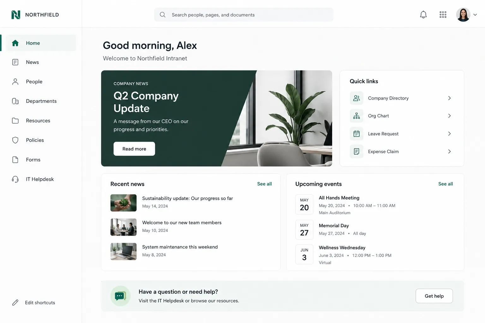
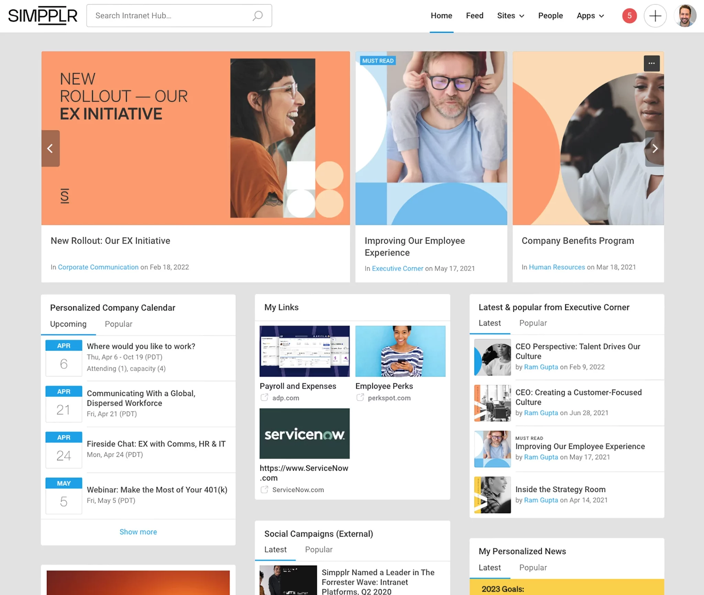
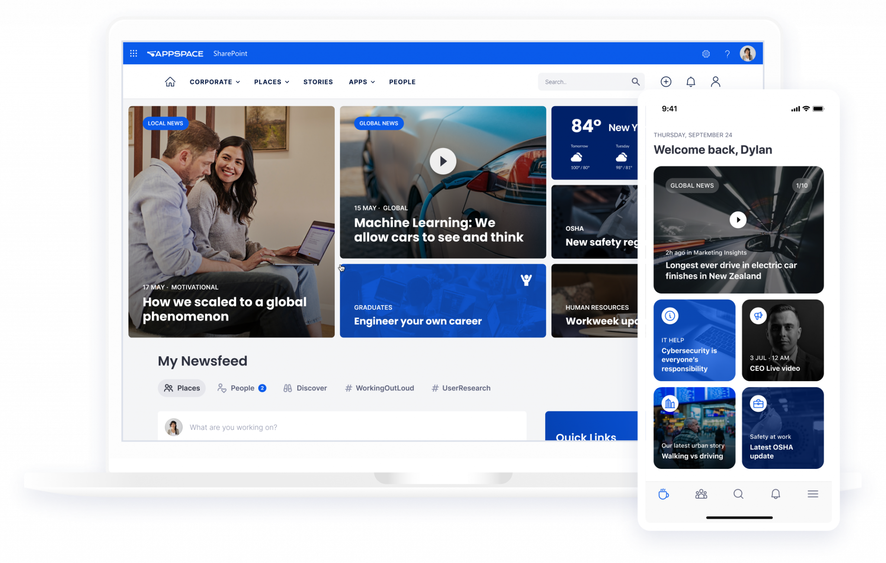
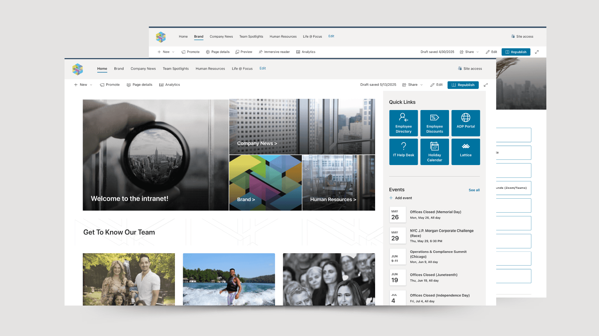
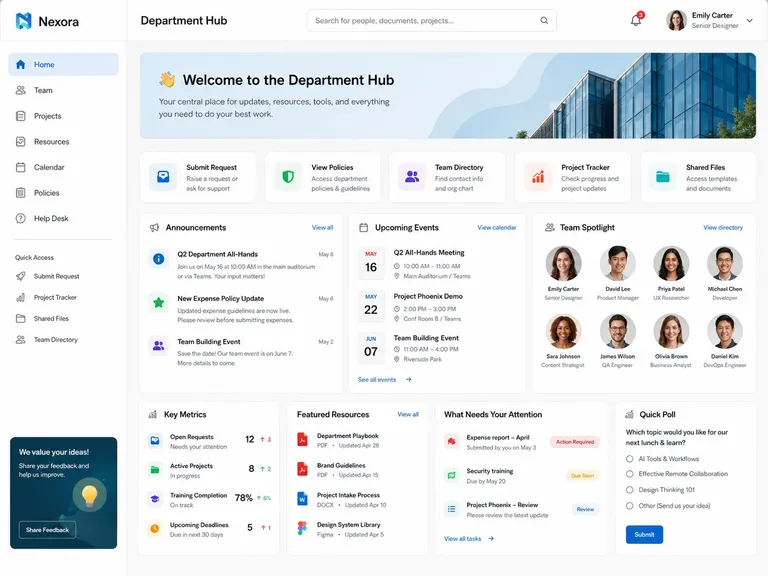
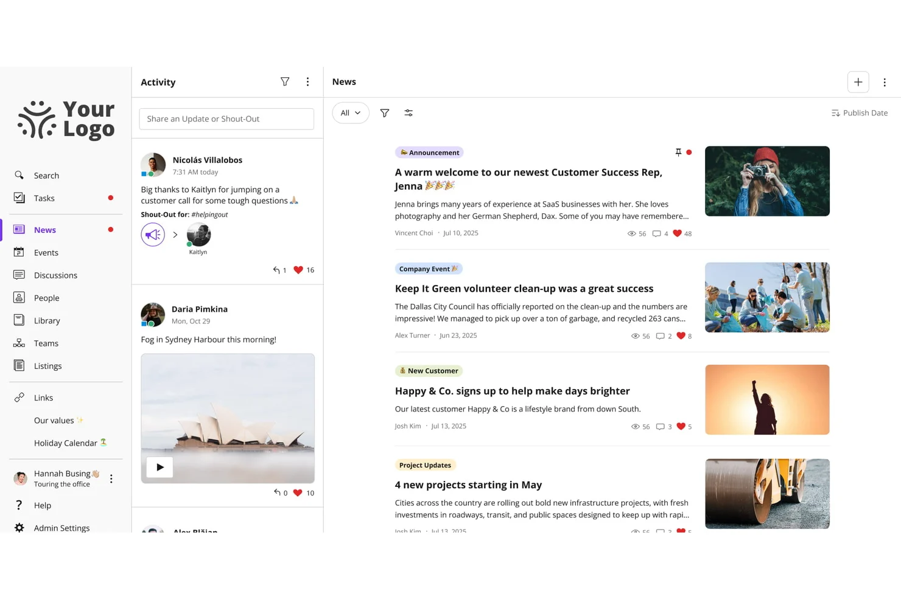
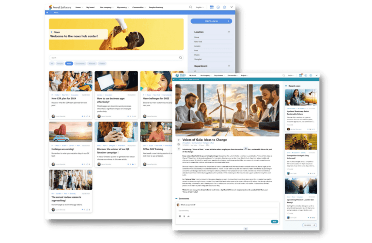
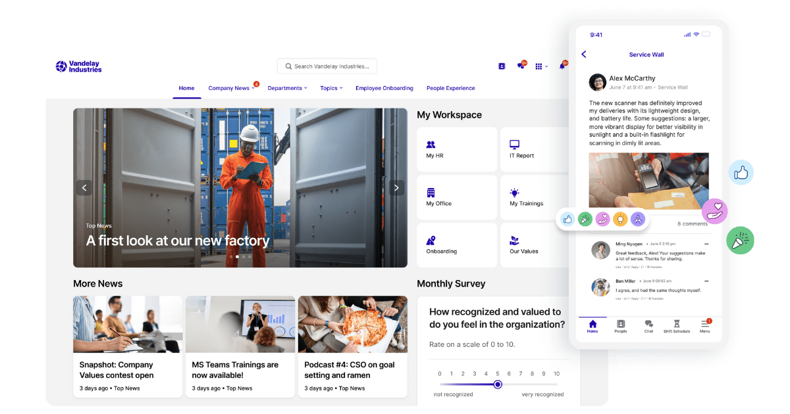
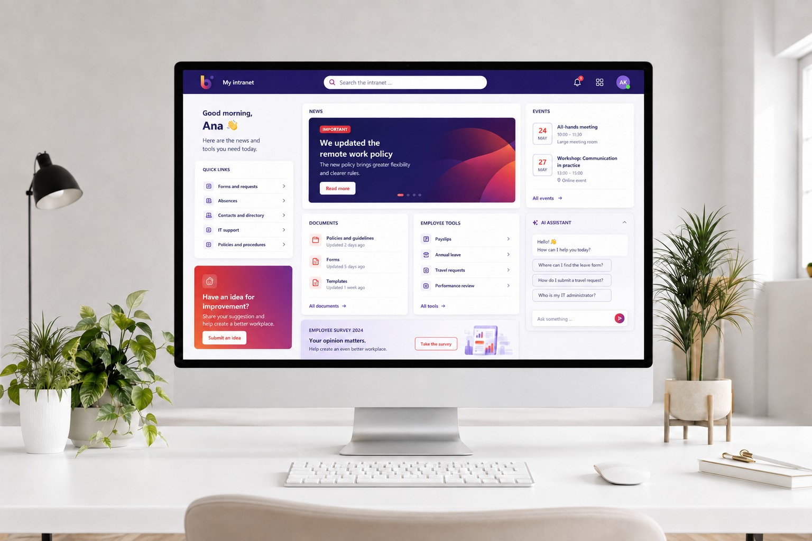
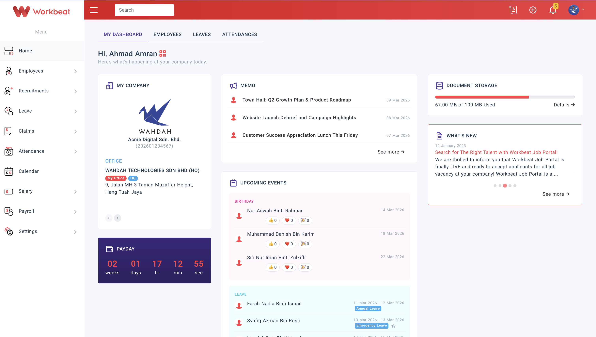

10 real intranet homepages. Pick a number and that layout becomes the JV Developments demo homepage (~150 fictional staff) for Monday. Kakashi's top picks for a developer: #1, #2, #4.

"Good morning, Alex" personal greeting, one big CEO/company news hero, quick links on the right, recent news + upcoming events below. Calm, premium, exec-safe. JV version: hero = your newest tower photo.
Inspired by: Axero-style intranet

Exactly your menu style: Home / Feed / Sites ▾ / People / Apps ▾ across the top. Big rotating story cards, then calendar, my links and exec news in 3 columns. Most "real intranet" feeling of the ten.
Source: Simpplr homepage

Top menu with drop-downs (Corporate ▾, Places ▾, Apps ▾), then a photo/video card mosaic — news, safety, HR — with the same home on a phone. Best if site crews on phones matter most.
Source: Appspace on SharePoint

Big welcome photo tile, Company News / Brand / HR tiles beside it, 6 quick-link tiles (Directory, Discounts, Help Desk, Holiday Calendar) and an events rail. Very visual — a developer's projects would look great here.
Source: SharePoint intranet (KPJ Digital portfolio)

Every department gets this page: welcome banner, 5 action tiles (Submit Request, Policies, Directory, Project Tracker, Shared Files), announcements, events, team spotlight with faces, metrics and featured resources. Best sub-page layout of the ten.
Inspired by: Axero department hub

Left column is a live activity feed with shout-outs — "Big thanks to Kaitlyn" with likes — where people post plain thank-yous (no points attached — there is no points system). Right side is the news list. Most alive and human; best for culture and engagement.
Source: Jostle intranet

A news hub: banner, filter chips, and a magazine grid of story cards, with article pages and comments. Choose this if company news/announcements are the #1 job of the homepage.
Source: Powell Software intranet

Top menu (Home, Company News, Departments ▾, Topics ▾), big photo carousel, more news below, and a "My Workspace" tile box — My HR, IT Report, My Office, My Trainings — plus a monthly survey and a strong mobile view.
Source: Staffbase intranet example

"Good morning, Ana" with quick links on the left, a big important-news banner in the middle, documents + employee tools under it, events on the right. The most practical day-to-day working homepage.
Source: SharePoint intranet concept (BizIT)

Greeting, company card, memos, upcoming events with birthdays people can react to, leave who's-away list, document storage and what's-new. Choose this if HR self-serve (leave, claims, payroll links) is the main reason staff log in.
Source: Workbeat HR portal